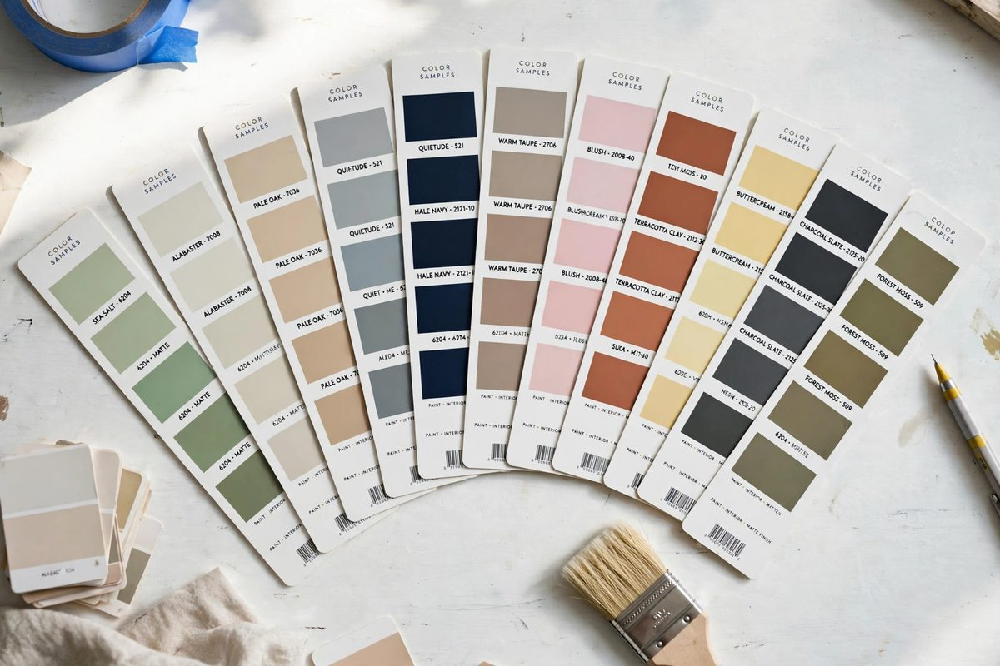

Color Harmony Rules for Beginners

Complementary, analogous, triadic and more: the classic harmony rules explained with examples you can try today.
What harmony means
Harmony is the sense that colors belong together. It comes from relationships on the color wheel, the circle that arranges hues in the order of the rainbow. Colors that are close together feel related, colors opposite each other feel balanced by contrast, and colors spaced evenly feel lively but orderly. Harmony rules are not laws of nature; they are patterns that artists have used for centuries because they reliably produce pleasing results.
Complementary harmony
Complementary colors sit directly opposite each other: blue and orange, red and green, purple and yellow. They create the strongest contrast and make each other look more vivid. The trick is proportion: use one as the main color and the other as a small accent, or soften one of them, or the pair will vibrate and tire the eye. A navy page with a small orange button is complementary harmony at its best.
Analogous harmony
Analogous colors are neighbours on the wheel, such as blue, blue-green and green. They occur together in nature, in seas and forests, so they feel calm and unified. Analogous schemes are easy to get right and hard to make exciting, so add interest with contrast in lightness: a deep teal with a pale mint and a mid green has variety even though the hues are close.
Triadic and split-complementary
Triadic harmony uses three colors spaced evenly around the wheel, such as red, yellow and blue. It is vibrant and balanced, and works well for playful brands and illustrations. Split-complementary harmony takes one color plus the two colors beside its opposite, which gives strong contrast with less tension than a direct complement. Both schemes need a clear leader color and plenty of neutral space to stay calm.
Breaking the rules well
Once you understand harmony, you can break it on purpose. A single unexpected color in an otherwise harmonious palette creates a focal point. The key is intention: the odd color should have a job, such as marking the one action on the page. Random rule-breaking looks like a mistake; deliberate rule-breaking looks like confidence. Try a harmony first, then change one thing and see if the design improves.
Harmony in data visualization
Harmony rules are especially useful in charts and dashboards, where several colors must work together without confusing the reader. Use an analogous scheme for related data, such as shades of blue for different years, and reserve a complementary accent for the one series that matters most. For categories that are unrelated, a triadic or evenly spaced set keeps them distinct. Always check a chart in greyscale: if the series are still distinguishable by lightness or pattern, the chart works for everyone, including people who cannot tell the colors apart.
Practising harmony by eye
The best way to learn harmony is to practise without a tool. Take a photo you like, identify three colors in it, and work out which harmony rule they follow. Do this ten times and you will start to see harmonies everywhere, in nature, in films and in shop windows. Once you can recognise harmony by eye, you can build palettes faster and with more confidence than any generator alone allows.
Frequently asked questions
Which harmony is easiest for beginners?
Analogous. Neighbouring colors almost always look good together, so it is the safest starting point.
How many colors can a triadic palette have?
Three hues plus neutrals and shades. Adding a fourth hue usually breaks the balance.
Do I need to use harmony rules?
No, but they are useful shortcuts. Many good palettes follow a harmony rule without the designer naming it.
How many colors can a chart have?
Five or six at most, and fewer is better. More colors make a chart harder to read, so group small categories into one 'other' slice.
Try the tools
HEX to RGB Converter
Convert a HEX color code into its red, green and blue values, instantly and in your browser.
RGB to HEX Converter
Convert red, green and blue values (0-255) into a HEX color code you can use in CSS.
Palette Generator
Pick a base color and generate complementary, analogous, triadic and monochromatic palettes.
Contrast Checker
Check the WCAG contrast ratio between a text color and a background color, with AA and AAA verdicts.
More guides
 How to Pick Colors for a Website
How to Pick Colors for a Website HEX vs RGB vs HSL Explained
HEX vs RGB vs HSL Explained
Building a Color Palette from Scratch Color Contrast and Accessibility Guide
Color Contrast and Accessibility Guide Color Psychology in Design
Color Psychology in Design Choosing Brand Colors
Choosing Brand Colors Warm vs Cool Colors
Warm vs Cool Colors Using a Color Picker Tool Effectively
Using a Color Picker Tool Effectively Monochromatic Color Schemes
Monochromatic Color Schemes Complementary Colors: A Complete Guide
Complementary Colors: A Complete Guide Analogous Colors in Design
Analogous Colors in Design Triadic Color Schemes Explained
Triadic Color Schemes Explained Color Trends for 2026
Color Trends for 2026 Picking Colors for Dark Mode
Picking Colors for Dark Mode Color-Blind Friendly Design
Color-Blind Friendly Design Gradient Colors: A Practical Guide
Gradient Colors: A Practical Guide Seasonal Color PalettesColor Mistakes Beginners Make
Seasonal Color PalettesColor Mistakes Beginners Make Naming Colors in CSS
Naming Colors in CSS